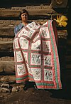

quilting

Definition: A quilt is a multi-layered textile, traditionally composed of two or more layers of fabric or fiber. Commonly three layers are used with a filler material. These layers traditionally include a woven cloth top, a layer of batting or wadding, and a woven back combined using the techniques of quilting. This is the process of sewing on the face of the fabric, and not just the edges, to combine the three layers together to reinforce the material. Stitching patterns can be a decorative element. A single piece of fabric can be used for the top of a quilt (a "whole-cloth quilt"), but in many cases the top is created from smaller fabric pieces joined, or patchwork. The pattern and color of these pieces creates the design.
Source: Wikipedia
Wikipedia Page (Something wrong with this association? Let us know.)
Wikidata Page (Something wrong with this association? Let us know.)